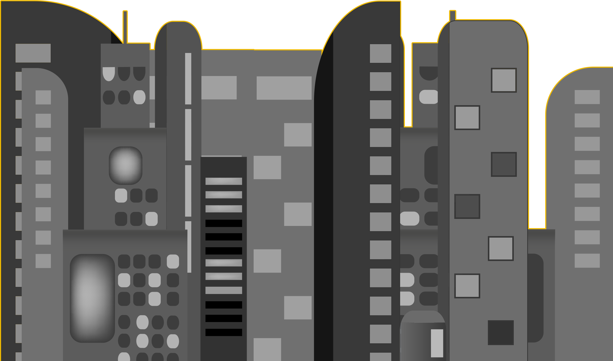

retour au lyrics
Présentation du projet

Le projet lyrics est une proposition pédagogique pensée par l’enseignante en DUT MMI Gaelle Charpentier: elle
consiste en la création d’un site web de type statique où sont présentes les paroles d’une chanson
-attribué de manière aléatoire par l’enseignante.
Ainsi, chaque élève s'est vu donné la possibilité de créer un site de A à Z, et cela autant dans le fond que dans la forme.
Les directives ont alors porté à la fois sur la signification des paroles, le chanteur ou le compositeur de la
musique afin que soit proposé pour la phase finale un univers visuel fort.
Le design sera le témoin des différentes recherches effectuées
, illustrant dès lors au mieux la chanson et projetant le visiteur dans l’ambiance évoquée par cette
dernière.

Le cahier des charges techniques comprend l’affichage du site de façon optimale entre 1024 et
1920 pixels de large du navigateur.
De plus, il doit aussi être compatible avec les navigateurs
Safari, Firefox, Chrome, Opéra et Edge.